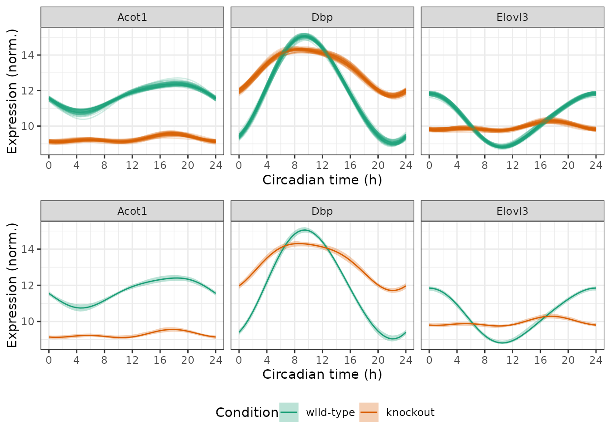

Quantifying uncertainty in (differential) rhythmicity
Source:vignettes/uncertainty.Rmd
uncertainty.RmdIntroduction
Here we show how to use limorhyde2 to quantify
uncertainty in rhythmicity and differential rhythmicity. This step is
not essential and can be computationally expensive, but can provide
additional information. As limorhyde2 is a Bayesian
approach focused on effect sizes rather than statistical
significance, quantifying uncertainty relies on the concepts of posterior
probability and credible
intervals.
The data are based on liver samples from wild-type and Rev-erb\(\alpha/\beta\) double-knockout mice (Cho et al. 2012 and GSE34018).
Load the data
The expression data are in a matrix with one row per gene and one column per sample. The metadata are in a table with one row per sample. To save time and space, the expression data include only a subset of genes.
y = GSE34018$y
y[1:5, 1:5]
#> GSM840516 GSM840517 GSM840518 GSM840519 GSM840520
#> 12686 11.962830 11.923338 11.098814 10.958933 9.256413
#> 13170 8.989743 9.132606 12.381036 12.441759 14.766070
#> 26897 11.515292 11.625519 10.579969 10.601969 11.096489
#> 11287 7.985859 7.930935 7.674688 7.899531 7.768563
#> 12046 8.024084 7.856703 7.942198 8.172695 7.981340
metadata = GSE34018$metadata
metadata
#> sample cond time
#> 1: GSM840516 wild-type 0
#> 2: GSM840517 wild-type 0
#> 3: GSM840518 wild-type 4
#> 4: GSM840519 wild-type 4
#> 5: GSM840520 wild-type 8
#> 6: GSM840521 wild-type 8
#> 7: GSM840522 wild-type 12
#> 8: GSM840523 wild-type 12
#> 9: GSM840524 wild-type 16
#> 10: GSM840525 wild-type 16
#> 11: GSM840526 wild-type 20
#> 12: GSM840527 wild-type 20
#> 13: GSM840504 knockout 0
#> 14: GSM840505 knockout 0
#> 15: GSM840506 knockout 4
#> 16: GSM840507 knockout 4
#> 17: GSM840508 knockout 8
#> 18: GSM840509 knockout 8
#> 19: GSM840510 knockout 12
#> 20: GSM840511 knockout 12
#> 21: GSM840512 knockout 16
#> 22: GSM840513 knockout 16
#> 23: GSM840514 knockout 20
#> 24: GSM840515 knockout 20
#> sample cond timeFit linear models and compute posterior fits
Because the samples were acquired at relatively low temporal
resolution (every 4 h), we use three knots instead of the default four,
which reduces the flexibility of the spline curves. We specify
condColname so getModelFit() knows to fit a
differential rhythmicity model.
fit = getModelFit(y, metadata, nKnots = 3L, condColname = 'cond')
fit = getPosteriorFit(fit)Draw samples from the posterior fits
The posterior fits consist of not just a single set of model coefficients (the posterior means), but distributions of model coefficients. Sampling from these distributions is the first step to quantifying uncertainty in the fits. Here we generate 50 posterior samples, although an actual analysis would require more to accurately estimate the credible intervals.
fit = getPosteriorSamples(fit, nPosteriorSamples = 50L)Get fitted time-courses
We can use the posterior samples to quantify uncertainty in the
expected measurements, i.e., the fitted curves, by specifying the
fitType argument. Here we focus on three genes.
genes = data.table(
id = c('13170', '12686', '26897'),
symbol = c('Dbp', 'Elovl3', 'Acot1'))
times = seq(0, 24, 0.5)
measFitSamps = getExpectedMeas(
fit, times = times, fitType = 'posterior_samples', features = genes$id)
measFitSamps[genes, symbol := i.symbol, on = .(feature = id)]
print(measFitSamps, nrows = 10L)
#> time cond feature value posterior_sample symbol
#> 1: 0 wild-type 13170 9.274814 1 Dbp
#> 2: 0 wild-type 12686 11.863308 1 Elovl3
#> 3: 0 wild-type 26897 11.566155 1 Acot1
#> 4: 0 knockout 13170 11.906920 1 Dbp
#> 5: 0 knockout 12686 9.816829 1 Elovl3
#> ---
#> 14696: 24 wild-type 12686 11.824787 50 Elovl3
#> 14697: 24 wild-type 26897 11.662587 50 Acot1
#> 14698: 24 knockout 13170 11.843255 50 Dbp
#> 14699: 24 knockout 12686 9.893764 50 Elovl3
#> 14700: 24 knockout 26897 9.105940 50 Acot1Given the expected measurements from the posterior samples, we can
compute the lower and upper bounds of the credible interval for each
combination of feature, condition, and time-point. By default,
getExpectedMeasIntervals() calculates the 90% equal-tailed
interval.
measFitInts = getExpectedMeasIntervals(measFitSamps)
print(measFitInts, nrows = 10L)
#> time cond feature symbol lower upper
#> 1: 0 wild-type 13170 Dbp 9.233404 9.565491
#> 2: 0 wild-type 12686 Elovl3 11.709998 11.951344
#> 3: 0 wild-type 26897 Acot1 11.422795 11.675348
#> 4: 0 knockout 13170 Dbp 11.794823 12.124659
#> 5: 0 knockout 12686 Elovl3 9.707732 9.927886
#> ---
#> 290: 24 wild-type 12686 Elovl3 11.709998 11.951344
#> 291: 24 wild-type 26897 Acot1 11.422795 11.675348
#> 292: 24 knockout 13170 Dbp 11.794823 12.124659
#> 293: 24 knockout 12686 Elovl3 9.707732 9.927886
#> 294: 24 knockout 26897 Acot1 9.008638 9.233237It’s always a good idea to also calculate the posterior mean fitted curves.
measFitMean = getExpectedMeas(fit, times = times, features = genes$id)
measFitMean[genes, symbol := i.symbol, on = .(feature = id)]Now we can plot the results. In the first row, each curve corresponds to a posterior sample. In the second row, the ribbons indicate the credible intervals.
timeBreaks = seq(0, 24, 4)
pal = 'Dark2'
p1 = ggplot(measFitSamps) +
facet_wrap(vars(symbol), scales = 'fixed', nrow = 1) +
geom_line(aes(x = time, y = value, color = cond,
group = interaction(cond, posterior_sample)), alpha = 0.2) +
labs(x = 'Circadian time (h)', y = 'Expression (norm.)', color = 'Condition') +
scale_x_continuous(breaks = timeBreaks) +
scale_color_brewer(palette = pal) +
theme(legend.position = 'none')
p2 = ggplot() +
facet_wrap(vars(symbol), scales = 'fixed', nrow = 1) +
geom_ribbon(aes(x = time, ymin = lower, ymax = upper, fill = cond),
alpha = 0.3, data = measFitInts) +
geom_line(aes(x = time, y = value, color = cond), data = measFitMean) +
labs(x = 'Circadian time (h)', y = 'Expression (norm.)', color = 'Condition',
fill = 'Condition') +
scale_x_continuous(breaks = timeBreaks) +
scale_fill_brewer(palette = pal) +
scale_color_brewer(palette = pal) +
theme(legend.position = 'bottom')
plot_grid(p1, p2, ncol = 1, rel_heights = c(1, 1.25))
Get rhythm and differential rhythm statistics
We can also use the posterior samples to quantify uncertainty in the
statistics, again by specifying the fitType argument.
rhyStatsSamps = getRhythmStats(fit, features = genes$id, fitType = 'posterior_samples')
diffRhyStatsSamps = getDiffRhythmStats(fit, rhyStatsSamps)
diffRhyStatsSamps[genes, symbol := i.symbol, on = .(feature = id)]
print(diffRhyStatsSamps, nrows = 10L)
#> feature posterior_sample cond1 cond2 mean_mesor
#> 1: 12686 1 wild-type knockout 10.15766
#> 2: 12686 2 wild-type knockout 10.15766
#> 3: 12686 3 wild-type knockout 10.15766
#> 4: 12686 4 wild-type knockout 10.15766
#> 5: 12686 5 wild-type knockout 10.15766
#> ---
#> 146: 26897 46 wild-type knockout 10.47346
#> 147: 26897 47 wild-type knockout 10.47346
#> 148: 26897 48 wild-type knockout 10.47346
#> 149: 26897 49 wild-type knockout 10.47346
#> 150: 26897 50 wild-type knockout 10.47346
#> mean_peak_trough_amp diff_mesor diff_peak_trough_amp diff_peak_phase
#> 1: 1.7633818 -0.4215416 -2.6201893 -5.6887563
#> 2: 1.5702244 -0.4215416 -2.1313997 -6.1659571
#> 3: 1.7466211 -0.4215416 -2.5481985 -5.9954759
#> 4: 1.8630660 -0.4215416 -2.5796118 -5.6400564
#> 5: 1.7071846 -0.4215416 -2.4134397 -6.7763651
#> ---
#> 146: 1.1597560 -2.4048158 -1.5707881 0.2460203
#> 147: 0.9817103 -2.4048158 -0.8025853 -0.7843197
#> 148: 0.9179664 -2.4048158 -1.2098345 -1.1798541
#> 149: 0.8594796 -2.4048158 -0.9957860 -0.1180031
#> 150: 1.0290923 -2.4048158 -1.1370100 -2.2364984
#> diff_trough_phase diff_rhy_dist symbol
#> 1: 0.82009394 3.0700062 Elovl3
#> 2: -0.06900037 2.7052109 Elovl3
#> 3: 0.33848327 3.0569016 Elovl3
#> 4: -0.14269700 3.1510468 Elovl3
#> 5: -9.81410512 3.0545110 Elovl3
#> ---
#> 146: 6.78635282 1.5717491 Acot1
#> 147: -2.94075970 0.8233279 Acot1
#> 148: -3.24661986 1.2283422 Acot1
#> 149: 7.04463249 0.9960211 Acot1
#> 150: -3.59999383 1.2401330 Acot1In the plots below, each point represents a posterior sample.
p1 = ggplot(diffRhyStatsSamps) +
facet_wrap(vars(symbol), nrow = 1) +
geom_point(aes(x = diff_peak_trough_amp, y = diff_mesor), alpha = 0.2) +
labs(x = bquote(Delta * 'amplitude (norm.)'), y = bquote(Delta * 'mesor (norm.)'))
p2 = ggplot(diffRhyStatsSamps) +
facet_wrap(vars(symbol), nrow = 1) +
geom_point(aes(x = diff_peak_trough_amp, y = diff_peak_phase), alpha = 0.2) +
labs(x = bquote(Delta * 'amplitude (norm.)'), y = bquote(Delta * 'phase (h)'))
plot_grid(p1, p2, ncol = 1)
Finally, we can compute credible intervals for the rhythm and
differential rhythm statistics. Again, by default these are 90%
equal-tailed intervals. Currently getStatsIntervals() does
not calculate intervals for phase-based statistics, since phase and
phase difference are circular quantities.
rhyStatsInts = getStatsIntervals(rhyStatsSamps)
print(rhyStatsInts, nrows = 10L)
#> cond feature statistic lower upper
#> 1: wild-type 13170 peak_value 14.8875425 15.2247879
#> 2: wild-type 12686 peak_value 11.7122222 11.9527091
#> 3: wild-type 26897 peak_value 12.2431434 12.6095792
#> 4: knockout 13170 peak_value 14.1446489 14.4666946
#> 5: knockout 12686 peak_value 10.1660549 10.4678090
#> ---
#> 14: wild-type 12686 peak_trough_amp 2.7583816 3.1961593
#> 15: wild-type 26897 peak_trough_amp 1.3165677 2.0820149
#> 16: knockout 13170 peak_trough_amp 2.3338840 2.8714960
#> 17: knockout 12686 peak_trough_amp 0.4053327 0.8133666
#> 18: knockout 26897 peak_trough_amp 0.2871294 0.7179791
diffRhyStatsInts = getStatsIntervals(diffRhyStatsSamps)
print(diffRhyStatsInts, nrows = 10L)
#> cond1 cond2 feature statistic lower upper
#> 1: wild-type knockout 12686 diff_mesor -0.4215416 -0.4215416
#> 2: wild-type knockout 13170 diff_mesor 1.1950262 1.1950262
#> 3: wild-type knockout 26897 diff_mesor -2.4048158 -2.4048158
#> 4: wild-type knockout 12686 diff_peak_trough_amp -2.7171127 -2.1598489
#> 5: wild-type knockout 13170 diff_peak_trough_amp -3.8854777 -2.9242634
#> 6: wild-type knockout 26897 diff_peak_trough_amp -1.6016674 -0.7528489